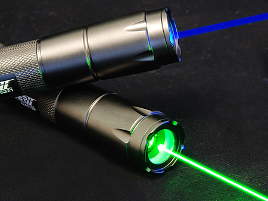
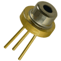

1.6.8. Полупроводниковые лазеры
Полупроводниковый лазер — твердотельный лазер, в котором в качестве рабочего вещества используется полупроводник. В таком лазере, в отличие от лазеров других типов (в том числе и других твердотельных), используются излучательные переходы не между изолированными уровнями энергии атомов, молекул и ионов, а между разрешенными энергетическими зонами кристалла. В полупроводниковом лазере накачка осуществляется непосредственно электрическим током.
Под именем полупроводниковых часто встречается гибридный лазер из мощного светодиода накачки и наклеенного на него твердотельного активного элемента. Плюс таких лазеров в том что светодиодную структуру накачки можно сделать довольно протяженной и, соответственно, мощной. Механические деформации от нагрева меньше сказываются на активном элементе. "Полупроводниковые" лазеры с мощностями единицы-десятки ватт делают в основном именно по такой технологии. Визуально отличить гибридный лазер от полупроводникового довольно сложно. Поскольку в полупроводниковом лазере возбуждаются и излучают коллективно атомы, составляющие кристаллическую решётку, сам лазер может обладать очень малыми размерами. Другими особенностями полупроводниковых лазеров являются высокий КПД, малая инерционность, простота конструкции.
Типичным представителем полупроводниковых лазеров является лазерный диод — лазер, в котором рабочей областью является полупроводниковый p-n переход. В таком лазере излучение происходит за счет рекомбинации электронов и дырок.
Лазерный диод — полупроводниковый лазер, построенный на базе диода. Его работа основана на возникновении инверсии населённостей в области p-n-перехода при инжекции носителей заряда.
Принцип действия
Когда на анод обычного диода подаётся положительный потенциал, то говорят, что диод смещён в прямом направлении. При этом дырки из p-области инжектируются в n-область p-n-перехода, а электроны из n-области инжектируются в p-область полупроводника. Если электрон и дырка оказываются «вблизи» (на расстоянии, когда возможно туннелирование), то они могут рекомбинировать с выделением энергии в виде фотона определённой длины волны (в силу сохранения энергии) и фотона (в силу сохранения импульса, потому что фотон уносит импульс). Такой процесс называется спонтанным излучением и является основным источником излучения в светодиодах.
Однако, при определённых условиях, электрон и дырка перед рекомбинацией могут находиться в одной области пространства достаточно долгое время (до микросекунд). Если в этот момент через эту область пространства пройдёт фотон нужной (резонансной) частоты, он может вызвать вынужденную рекомбинацию с выделением второго фотона, причём его направление, вектор поляризации и фаза будут в точности совпадать с теми же характеристиками первого фотона.
В лазерном диоде полупроводниковый кристалл изготавливают в виде очень тонкой прямоугольной пластинки. Такая пластинка по сути является оптическим волноводом, где излучение ограничено в относительно небольшом пространстве. Верхний слой кристалла легируется для создания n-области, а в нижнем слое создают p-область. В результате получается плоский p-n переход большой площади. Две боковые стороны (торцы) кристалла полируются для образования гладких параллельных плоскостей, которые образуют оптический резонатор, называемый резонатором Фабри-Перо. Случайный фотон спонтанного излучения, испущенный перпендикулярно этим плоскостям, пройдёт через весь оптический волновод и несколько раз отразится от торцов, прежде чем выйдет наружу. Проходя вдоль резонатора, он будет вызывать вынужденную рекомбинацию, создавая новые и новые фотоны с теми же параметрами, и излучение будет усиливаться (механизм вынужденного излучения). Как только усиление превысит потери, начнётся лазерная генерация.
Применение лазерных диодов
Лазерные диоды — важные электронные компоненты. Они находят широкое применение как управляемые источники света в волоконно-оптических линиях связи. Также они используются в различном измерительном оборудовании, например лазерных дальномерах. Другое распространённое применение — считывание штрих-кодов и лазерные принтеры. Лазеры с видимым излучением, обычно красные и иногда зелёные — в лазерных указках. Инфракрасные и красные лазеры — в проигрывателях CD- и DVD-дисков. Фиолетовые лазеры — в устройствах HD DVD и Blu-Ray.